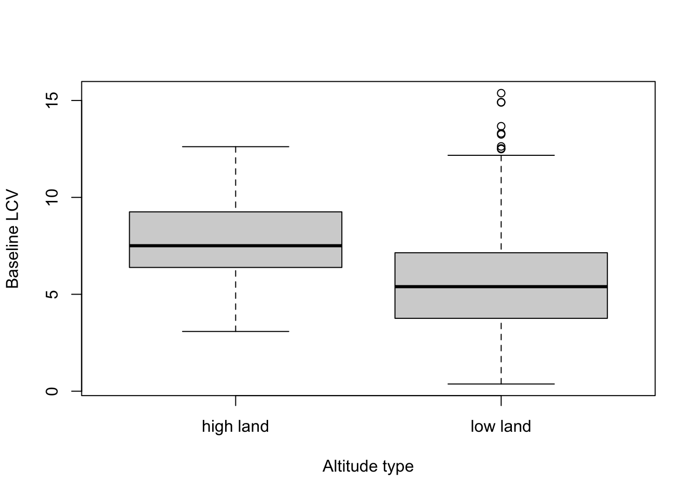
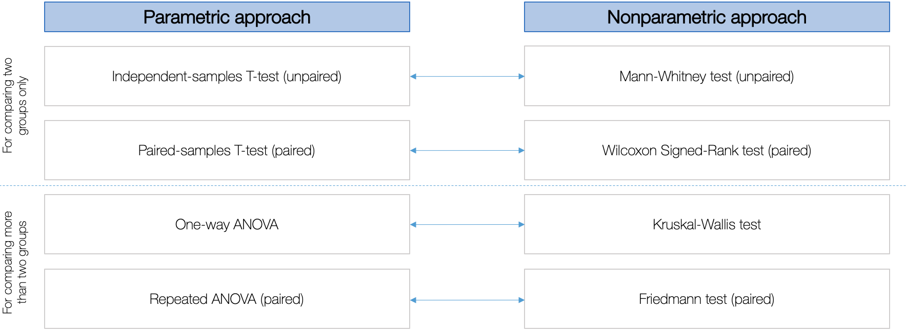
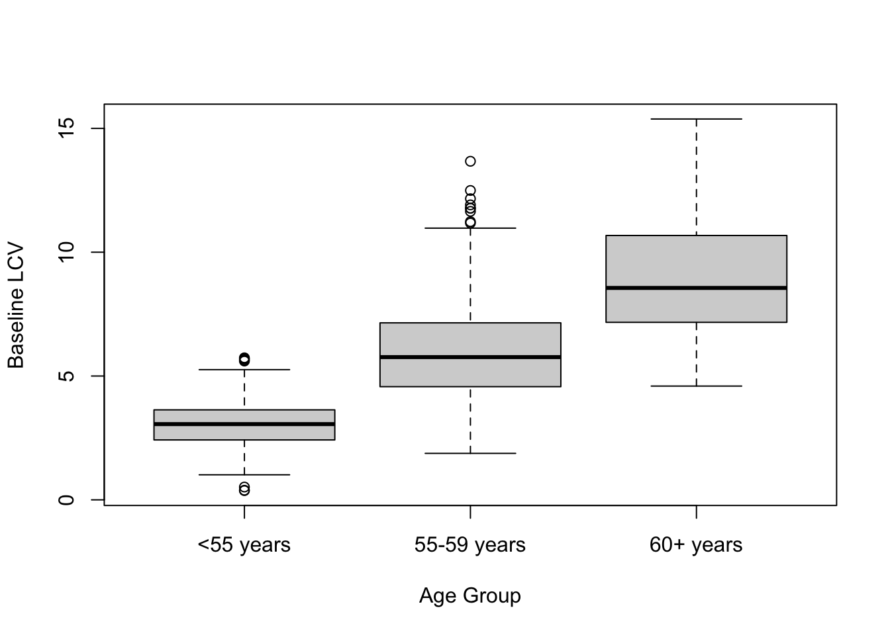

2 Parametric and Nonparametric Tests
Theme: Cardiopulmonary System
2.1 Introduction
This week we will learn how to perform hypothesis testing on a dataset containing additional health information on 654 individuals from aged 50+ years. This data is an “altered” excerpt extracted from the Clinical Practice Research Datalink (CPRD) in 2014/15. The blood pressure and lung capacity readings are additional health outcomes that are routinely recorded by GP practices and logged into the CPRD database. An individual becomes at risk of these outcomes with the advancement of age, and especially when one enters the age bracket of 50s. We will carry out a series of basic hypothesis tests to examine which demographic and environmental risk factors effect these outcomes.At the end of this session, you should be able to perform the following:
- You will know how the null and alternative hypothesis should be framed.
- You will be able to test the assumptions for parametric test
- You will know how to select the appropriate statistical test
- You will know how to interpret the p-values & accept or reject of null hypothesis.
2.1.1 Downloadable dataset for this exercise
Make sure to download the data set for Week 1 from HERE. The data file is named WK02 - Lung & BP Data.csv. Here is the data descriptor:
| Variable Name | Description |
|---|---|
| id | Unique identification number |
| age | Age (in years) |
| agegroup | Age groups”: <55 years”, “55-59 years” & “60+ years” |
| gender | Sex: “male” & “female” |
| altitudetype | Residing on “lowland” or “highland” |
| initialBP | Initial systolic blood pressure reading |
| postBP | Post systolic blood pressure reading |
| initialLCV | Initial lung capacity air reading |
| folllowupLCV | Post lung capacity air reading |
2.1.2 Reading list
Please find reading list for this week:
Recommended Book: Dalgaard, P. (2008). Introductory Statistics with R (Second Edition). Chapter 5: One- and two-sample tests. Pages 95 to 107 (Download Ebook here)
Recommended Book: Dalgaard, P. (2008). Introductory Statistics with R (Second Edition). Chapter 7: Analysis of variance and the Kruskal-Wallis test. Pages 127 to 143 (Download Ebook here)
2.2 Some data managing ettiquttes
Let us begin by importing the week 2 data set into RStudio. Let’s call the data frame healthdata.
# Set your own directory using setwd() function
# Load data into RStudio using read.csv(). The spreadsheet is stored in the object called 'healdata'
healthdata <- read.csv("WK02 - Lung & BP Data.csv")2.2.1 Logical Operators
Before we start, let us take a quick detour and cover some logical operators that can be used to make a set of conditions in R:
The symbol
<mean quantity is less than somethingThe symbol
<=mean a quantity is less than and equal to somethingThe symbol
>mean a quantity is greater than to somethingThe symbol
>=mean a quantity is greater than and equal to somethingThe symbol
==mean exactly identical to somethingThe symbol
!=mean not identical to somethingThe symbol
&means ANDThe symbol
|mean ORThe symbol
~is called a tilde. It is used for showing a relationship (e.g.x~y,cancer ~ lifestyle + hereditary + smokingstatusand etc.)
The list of logical operators are useful if we want to apply conditional statements or subset of records based on certain characteristics of our data. Let see how we can use these logical operators to create a subset of data from the health dataset we loaded into R.
Suppose we want to create the health data set where the rows in the column for the gender only keeps values that are ‘male.’ We use the == logical operator to perform this task:
healthdata_males <- healthdata[healthdata$gender=="male",]IMPORTANT NOTES: healthdata_males data frame is a new object of records corresponding to males only. The code healthdata[rows, columns] format; here, we are telling R to use the healthdata data frame and inside the square brackets of the code i.e. healthdata$gender=="male" it appears BEFORE the comma (on the left). We are telling R to select the variable gender and where in the row for gender to filter values that are exactly identical to “male”.
Suppose we want to create an object from the healthdata data frame where the rows in the column for age only keep values that are less than and equal to 55. We use the <= logical operator to perform this task:
healthdata_age55 <- healthdata[healthdata$age <= 55,]We can create compound statements. For instance, suppose we want to create from the healthdata that keeps "females" and residing on "high land" only. We use both the == and & logical operators to perform this task:
FemLowLand <- healthdata[healthdata$gender == "female" & healthdata$altitude == "low land",]2.3 Hypothesis testing for 2 groups
Suppose we want to investigate the impact of attitude (i.e. residing on high land or low land) on lung capacity measured at baseline, and to see whether the baseline lung capacity in the groups are different or not. It is definitely preferred to use a parametric test.
We first start by writing out the hypothesis statement which typically looks something like:
Null hypothesis (H0): The mean for the initial lung capacity by altitude (i.e. low and high land) are EQUAL
Alternative hypothesis (H1): The mean for the initial lung capacity by attitude (i.e. low and high land) are NOT EQUAL
Then, we check the following assumptions to ensure that the use of a parametric test is valid. Here are the list of assumptions we should test:
Is the main outcome a continuous variable (i.e., it exists as either an interval or ratio variable)?
Is the sample size of group has
n ≥ 30?Are there any outliers present for each group?
Is the outcome from a Gaussian (aka normal distribution) for each group?
Are the variances equal variances?
If any of the above assumptions are violated - you will need to use a nonparametric test.
2.3.1 Assumption checking
Assumption 1: Is the main outcome a continuous variable (i.e., it exists as either an interval or ratio variable)?
Answer: Yes, the initial lung capacity outcome variable (initialLCV) is an example of a ratio variable, with independent groups (i.e., saltitude variable)
Assumption 2: For each group, is n > 30?
# tabulate to see the number of individuals for each group
table(healthdata$altitude)##
## high land low land
## 65 589Answer: Yes, both groups are above 30
Assumption 3: Are there any outliers presence for each group?
# generate boxplots for each group and visualise in same plot window
boxplot(healthdata$initialLCV ~ healthdata$altitude, xlab = "Altitude type", ylab = "Baseline LCV")
Answer: For the high land category is looks OK. For the low land category, the initial lung capacity outcome variable (initialLCV) seems to be marginally dispersed. We can turn a blind eye on this one and assume that the outliers are minor here. For this assumption, we can say its not violated.
Assumption 4: Are the data from each of the 2 groups follow a normal distribution? Here, use the Kolmogorov-Smirnov test’s test to see if the p-value is above 0.05. We have chosen this over the Shapiro-Wilk’s test because we are dealing with a large sample n > 50 for both groups. This would mean that the distribution of the data is normal. This assumption is strict.
groupHigh <- healthdata$initialLCV[healthdata$altitude== "high land"]
groupLow <- healthdata$initialLCV[healthdata$altitude== "low land"]
# K-S normality test for "high land"
ks.test(groupHigh, "pnorm", mean=mean(groupHigh), sd=sd(groupHigh))
# K-S normality test for "low land"
ks.test(groupLow, "pnorm", mean=mean(groupLow), sd=sd(groupLow))Answer: The values for initial LCV are normal when altitude is "high land" with a p-value = 0.5727 > 0.05. However, its not normal when altitude is "low land" (i.e., p-value = 0.043 < 0.05 very marginal). Therefore, this assumption has been violated.
Ideally, we stop here and proceed with using a nonparametric test. But, nevertheless, here is how you test the last assumption.
Assumption 5: Do the two populations have the same variances? Here, use the F-test to see if the p-value is above 0.05. This would mean that the two group’s variance’s are the same. This assumption is also a strict assumption to test if the the fourth one passes.
var.test(healthdata$initialLCV ~ healthdata$altitude, data = healthdata)##
## F test to compare two variances
##
## data: healthdata$initialLCV by healthdata$altitude
## F = 0.77756, num df = 64, denom df = 588, p-value = 0.2094
## alternative hypothesis: true ratio of variances is not equal to 1
## 95 percent confidence interval:
## 0.5533558 1.1540197
## sample estimates:
## ratio of variances
## 0.7775639Answer: Yes, the population has equal variance and because the spread in the data is somewhat reflected in the boxplots, and the p-value = 0.2094 > 0.05.
2.3.2 Selection of tests
Statistical tests for Parametric and Nonparametric tests

The assumption concerning normality was violated. We need to therefore choose a nonparametric approach. The structure of the data has two groups which are independent. The approach is a Mann-Whitney test.
Important note: There will be a slight modification to the hypothesis statement since we will be performing the analysis within a nonparametric framework. Instead using the term mean, we instead use medians:
Null hypothesis (H0): The median for the initial lung capacity by altitude (i.e. low and high land) are EQUAL
Alternative hypothesis (H1): The median for the initial lung capacity by attitude (i.e. low and high land) are NOT EQUAL
Let’s perform a Mann-Whitney test using the wilcox.test() with the following options exact = FALSE (to suppress an infuriatingly stupid buggy message) and paired = FALSE
# Mann-Whitney test for independent groups
wilcox.test(healthdata$initialLCV ~ healthdata$altitude, exact = FALSE, paired = FALSE)##
## Wilcoxon rank sum test with continuity correction
##
## data: healthdata$initialLCV by healthdata$altitude
## W = 28686, p-value = 4.071e-11
## alternative hypothesis: true location shift is not equal to 0Interpretation: The p-value of the test is 6.712e-11 (very small), which is less than the threshold for deeming significance (i.e., p < 0.05). We can reject the null hypothesis that the baseline LCV in people living in high altitude areas are the same as those living on low altitude lands. We can therefore accept the alternative and conclude that there’s significant difference of measured LCV between the groups.
2.3.3 Questions
Use a paired test to determine whether there are any significant difference between measure for lung capacity measured at baseline and follow-up.
What is the null and alternative hypothesis?
What would be the appropriate statistical test for testing this hypothesis?
What is the interpretation and conclusions for this test?
2.4 Hypothesis testing for 3 or more groups
Suppose we want to investigate the impact of age groups on lung capacity measured at baseline, and to see whether the baseline lung capacity in the groups are different or same across the three age groups.
Again, we aim to use a parametric test and hypothesis statement will read something like:
Null hypothesis (H0): The mean for the initial lung capacity across the different age groups are EQUAL
Alternative hypothesis (H1): The mean for the initial lung capacity across the different age groups are DIFFERENT
2.4.1 Asssumption Checking
Again, we check the following assumptions to ensure that the use of a parametric test is valid. Here are the list of assumptions we should test:
Assumption 1: Is the main outcome a continuous variable? CHECK
Assumption 2: For each group, is n > 30? CHECK
# tabulate to see the number of individuals for each group
table(healthdata$agegroup)##
## <55 years 55-59 years 60+ years
## 130 407 117Assumption 3: Are there any outliers presence for each group? CHECK
# generate boxplots for each group and visualise in same plot window
boxplot(healthdata$initialLCV ~ healthdata$agegroup, xlab = "Age Group", ylab = "Baseline LCV")
Assumption 4: Are the data from each of the 3 groups follow a normal distribution? CHECK
group55less <- healthdata$initialLCV[healthdata$agegroup== "<55 years"]
group55_59 <- healthdata$initialLCV[healthdata$agegroup== "55-59 years"]
group60plus <- healthdata$initialLCV[healthdata$agegroup== "60+ years"]
# K-S normality test for "<55 years"
ks.test(group55less, "pnorm", mean=mean(group55less), sd=sd(group55less))
# K-S normality test for "55-59 years"
ks.test(group55_59, "pnorm", mean=mean(group55_59), sd=sd(group55_59))
# K-S normality test for "60+ years"
ks.test(group60plus, "pnorm", mean=mean(group60plus), sd=sd(group60plus)) 2.4.2 Selection of tests
Statistical tests for Parametric and Nonparametric tests
in this instance, all the assumptions were met. In this scenario, we therefore choose a parametric approach. The structure of the data has three groups which are also independent. This time the approach is going to be a One-way ANOVA test.
Let’s perform a 1-way ANONA test using the aov() function. No options as the code is straight forward!
# Mann-Whitney test for independent groups
summary(aov(healthdata$initialLCV ~ healthdata$agegroup))## Df Sum Sq Mean Sq F value Pr(>F)
## healthdata$agegroup 2 2027 1013.3 275.8 <2e-16 ***
## Residuals 651 2392 3.7
## ---
## Signif. codes: 0 '***' 0.001 '**' 0.01 '*' 0.05 '.' 0.1 ' ' 1Interpretation: The p-value of the test is 2.2e-16 (very small), which is far less than the threshold for deeming statistical significance (i.e., p < 0.05). Hence, we can reject the null hypothesis that the baseline LCV in people across the three different age groups are similar. We therefore accept the alternative hypothesis and conclude that there’s significant difference in the measured LCV across the age categories.
2.4.3 Questions
Use an unpaired test to determine whether there are any significant difference for baseline blood pressure measured across the three age groups:
What is the null and alternative hypothesis?
What would be the appropriate statistical test for testing this hypothesis?
What is the interpretation and conclusions for this test?
2.5 Conclusions
This is how hypothesis tests are carried out. Its very easy as you can see - the only tedious part is the assumptions testing. Be very strict when testing for normality especially, if this is violated, then go for the nonparametric test. So far, we have been performing two-tailed tests but you can conduct a one-tail test in your own time (see recommended readings).
Next week, we will learn more about multivariable regression models and the different families of models based on the outcome types.